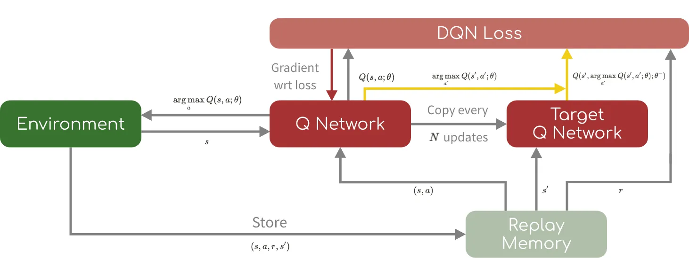
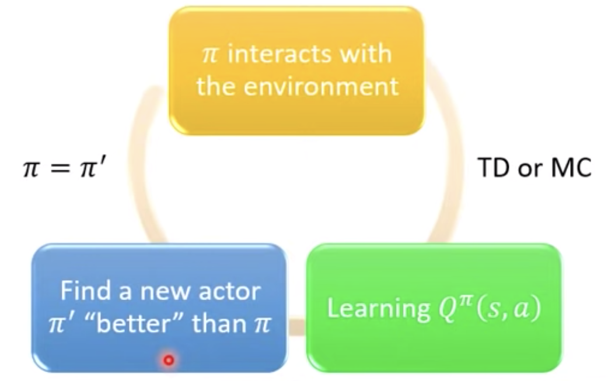

RL lab1
作業簡介
用DDQN來訓練RL模型，遊玩Atari的Pong，最後做到能穩定勝利。
使用技術 / 環境
- Language: Python 3.9
- Framework: PyTorch
- Dataset: ALE/Pong-v5
- Alogrithm: DDQN
方法介紹 (Methodology)
1. 狀態預處理 (State Preprocessing)
由於 Atari 原始畫面為 210x160 RGB 圖像，直接輸入模型會導致運算量過大。因此我進行了以下處理：
- Grayscale： 對每個像素的RGB相加取平均， 再套上threshold讓圖片變成黑白的。
- Resizing： 將圖片壓縮至 84x84 像素。
- Frame Stacking： 堆疊連續 4 幀畫面，讓模型能感知球的「速度」與「方向」。
state = state.astype(np.float32).mean(2) / 255.0
state[state > th] = 1.0
state[state <= th] = 0.02. 模型架構 (QNet Architecture)

使用三層卷積層 (Convolutional Layers) 提取特徵，後接全連接層 (Fully Connected) 輸出動作價值 (Q-value)。
3. 演算法簡介 (Q-learning)
經過上面的方式找到的新參數一定會比較好(證明略)，其中Q值是指給定某個state下，最好的action所能得到的total_reward，以前的方法是建表紀錄並更新，如今採用NN來學習並預測。
4. 演算法簡介 (DDQN)
DQN由於預測下一刻Q值得NN和選擇此刻動作的NN是同一個，常常會高估結果，導致收斂不問定，為了提升收斂穩定性，本專案採用了 Double DQN，透過分離「選擇動作」與「計算目標價值」的網路，解決過度估計 (Overestimation) 的問題。
DQN和DDQN的差異如下:
DQN Implementation
# DQN: 直接取 Target Net 的最大 Q 值
# 缺點：容易過度估計 (Overestimation)
next_q_values = target_net(next_states)
max_next_q = next_q_values.max(1)[0]
expected_q = rewards + gamma * max_next_qDouble DQN Implementation
# DDQN: 解耦 (Decoupling)
# 1. 用 Local Net 選動作 (Argmax)
# 2. 用 Target Net 算該動作的 Q 值
action_idx = eval_net(next_states).argmax(1)
next_q_values = target_net(next_states)
# gather: 根據 action_idx 取出對應的 Q 值
next_q = next_q_values.gather(1, action_idx)
expected_q = rewards + gamma * next_q常用技巧
- Replay Buffer： 儲存過去 10,000 筆經驗，隨機採樣進行訓練，打破資料相關性。
- Epsilon-Greedy： 訓練初期保持高探索率，隨著訓練步數增加線性衰減 Epsilon 值。
實作成果
下方是模型訓練過程的 Loss 變化圖，以及最終的辨識結果。
Training Loss
Step: 716 | Reward: 1.000 / 11.000
Demo 結果

相關資源
點擊下方按鈕查看完整程式碼或文件。
View on GitHub